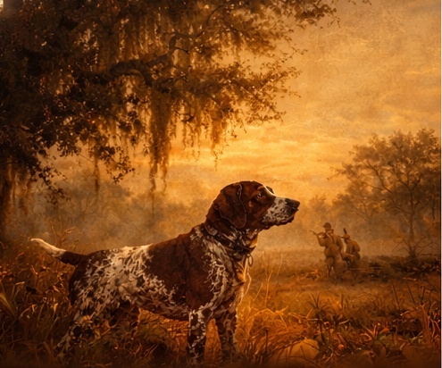
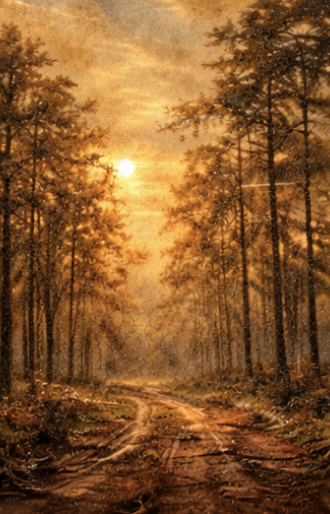

Dog Work and Field Tradition
The mood is deliberate and old-world: dogs in the field, brushed canvas, worn leather, and the kind of restraint that feels inherited rather than designed.
Dendera Farm is a private Southern property shaped by stewardship, sporting tradition, agricultural leasing, and timber management. It is not novelty land or recreational fluff. It is working ground, held with patience, judgment, and a long memory.
The spirit here is South Georgia: dark timber, open fields, old roads, duck mornings, bird dogs, and land that carries its own quiet weight.
Dendera Farm is managed with a simple bias: protect the character of the land, keep it productive, and think in decades rather than quarters. The strongest land assets are rarely overworked. They are understood, maintained, and allowed to compound.
This is not passive acreage. It is a serious Southern holding shaped by field realities, access, stand conditions, agricultural use, and long-horizon judgment.
“The strongest land assets are not managed for the next quarter. They are managed for the next generation.”
Dendera Farm
The sporting side of Dendera Farm should feel closer to old field paintings than modern outdoor marketing. Deer season, duck mornings, bird dogs, and long-established Southern sporting culture belong to the identity of the place.

The mood is deliberate and old-world: dogs in the field, brushed canvas, worn leather, and the kind of restraint that feels inherited rather than designed.
Hunting is part of the practical and cultural life of the property, not an afterthought. It reflects habitat, timing, restraint, and respect for the land itself.

This should feel like South Georgia charm, not the Pacific Northwest. Pine, field edge, water, long shadows, and a slower, older visual language matter here.
Portions of the property are leased for agriculture, reinforcing the discipline of working land rather than idle acreage. The result is a property identity tied not only to beauty, but to usefulness.
A South Georgia staple, and part of the broader agricultural rhythm that gives the property real regional authenticity.
Leased acreage remains disciplined and productive, supporting a working-land mindset instead of ornamental ownership.
Cotton reinforces the classic Southern agricultural identity of the property and its rootedness in regional land use.
Timber sits at the center of Dendera Farm’s identity as a land asset. It is approached as a long-duration holding, requiring timing, road access, stand awareness, and decisions that protect future value rather than chase immediate extraction.
Good land management is rarely loud. It is the steady result of maintenance, practical judgment, and consistency across years. The aim is durability, not theater.
Dendera Farm exists at the intersection of heritage and management. It honors permanence while treating stewardship as an active responsibility. The result is a property identity that feels grounded, elegant, and quietly durable.
This is not land presented for spectacle. It is land held with seriousness.

This website is intended to present Dendera Farm with clarity, elegance, and seriousness. For inquiries related to the property, land management, or partnerships, use the contact details below.
Replace this email with your actual address before deploying.
Dendera Farm
South Georgia